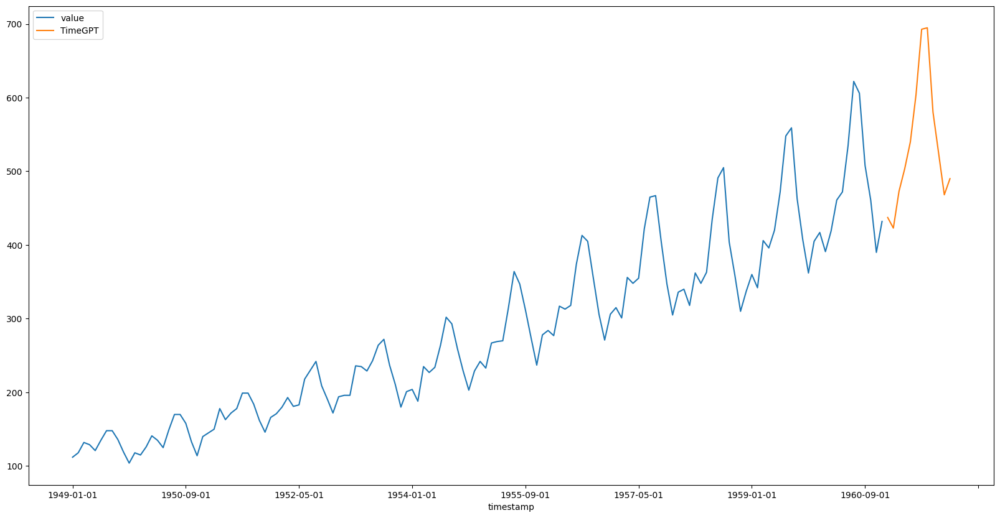

timegpt = TimeGPT(token=os.environ['TIMEGPT_TOKEN'])TimeGPT
Unlock the power of accurate predictions and confidently navigate uncertainty. Reduce uncertainty and resource limitations. With TimeGPT, you can effortlessly access state-of-the-art models to make data-driven decisions. Whether you’re a bank forecasting market trends or a startup predicting product demand, TimeGPT democratizes access to cutting-edge predictive insights, eliminating the need for a dedicated team of machine learning engineers.
Introduction
Nixtla’s TimeGPT is a generative pre-trained model trained to forecast time series data. The inputs to TimeGPT are time series data, and the model generates forecast outputs based on these. The input involves providing the historical data and potentially defining parameters such as the forecast horizon. TimeGPT can be used across a plethora of tasks including demand forecasting, anomaly detection, financial forecasting, and more.
The TimeGPT model “reads” time series data much like the way humans read a sentence – from left to right. It looks at a chunk of past data, which we can think of as “tokens”, and predicts what comes next. This prediction is based on patterns the model identifies in past data, much like how a human would predict the end of a sentence based on the beginning.
The TimeGPT API provides an interface to this powerful model, allowing users to leverage its forecasting capabilities to predict future events based on past data. With this API, users can not only forecast future events but also delve into various time series-related tasks, such as what-if scenarios, anomaly detection, and more.
Usage
TimeGPT
TimeGPT (token:str, environment:Optional[str]=None)
Constructs all the necessary attributes for the TimeGPT object.
| Type | Default | Details | |
|---|---|---|---|
| token | str | The authorization token to interact with the TimeGPT API. | |
| environment | Optional | None | Custom environment. Pass only if provided. |
You can instantiate the TimeGPT class providing your credentials.
You can test the validate of your token calling the validate_token method:
TimeGPT.validate_token
TimeGPT.validate_token (log:bool=True)
Returns True if your token is valid.
timegpt.validate_token()INFO:__main__:Happy Forecasting! :), If you have questions or need support, please email ops@nixtla.ioTrueForecast
TimeGPT.forecast
TimeGPT.forecast (df:pandas.core.frame.DataFrame, h:int, freq:Optional[str]=None, id_col:str='unique_id', time_col:str='ds', target_col:str='y', X_df:Optional[pandas.core.frame.DataFrame]=None, level:Optional[List[Union[int,float]]]=None, finetune_steps:int=0, clean_ex_first:bool=True, validate_token:bool=False, add_history:bool=False, date_features:Union[bool,List[str]]=False, date_features_to_one_hot:Union[bool,List[str]]=True, num_partitions:Optional[int]=None)
Forecast your time series using TimeGPT.
| Type | Default | Details | |
|---|---|---|---|
| df | DataFrame | The DataFrame on which the function will operate. Expected to contain at least the following columns: - time_col: Column name in df that contains the time indices of the time series. This is typically a datetimecolumn with regular intervals, e.g., hourly, daily, monthly data points. - target_col: Column name in df that contains the target variable of the time series, i.e., the variable we wish to predict or analyze. Additionally, you can pass multiple time series (stacked in the dataframe) considering an additional column: - id_col: Column name in df that identifies unique time series. Each unique value in this columncorresponds to a unique time series. |
|
| h | int | Forecast horizon. | |
| freq | Optional | None | Frequency of the data. By default, the freq will be inferred automatically. See pandas’ available frequencies. |
| id_col | str | unique_id | Column that identifies each serie. |
| time_col | str | ds | Column that identifies each timestep, its values can be timestamps or integers. |
| target_col | str | y | Column that contains the target. |
| X_df | Optional | None | DataFrame with [unique_id, ds] columns and df’s future exogenous. |
| level | Optional | None | Confidence levels between 0 and 100 for prediction intervals. |
| finetune_steps | int | 0 | Number of steps used to finetune TimeGPT in the new data. |
| clean_ex_first | bool | True | Clean exogenous signal before making forecasts using TimeGPT. |
| validate_token | bool | False | If True, validates token before sending requests. |
| add_history | bool | False | Return fitted values of the model. |
| date_features | Union | False | Features computed from the dates. Can be pandas date attributes or functions that will take the dates as input. If True automatically adds most used date features for the frequency of df. |
| date_features_to_one_hot | Union | True | Apply one-hot encoding to these date features. If date_features=True, then all date features areone-hot encoded by default. |
| num_partitions | Optional | None | Number of partitions to use. Only used in distributed environments (spark, ray, dask). If None, the number of partitions will be equal to the available parallel resources. |
| Returns | pandas.DataFrame | DataFrame with TimeGPT forecasts for point predictions and probabilistic predictions (if level is not None). |
Now you can start to make forecasts! Let’s import an example:
df = pd.read_csv('https://raw.githubusercontent.com/Nixtla/transfer-learning-time-series/main/datasets/air_passengers.csv')
df.head()| timestamp | value | |
|---|---|---|
| 0 | 1949-01-01 | 112 |
| 1 | 1949-02-01 | 118 |
| 2 | 1949-03-01 | 132 |
| 3 | 1949-04-01 | 129 |
| 4 | 1949-05-01 | 121 |
Let’s plot this series
df.set_index('timestamp').plot(figsize=(20, 10))<Axes: xlabel='timestamp'>Now we can forecast this dataset. We observe that this dataset has monthly frequency. We have to pass the right pandas frequency to TimeGPT to have the right forecasts. In this case ‘MS’. Let’s forecast the next 12 observations. In this case we also have to define:
time_col: Column that identifies the datestamp column.target_col: The variable that we want to forecast.
timegpt_fcst_df = timegpt.forecast(df=df, h=12, time_col='timestamp', target_col='value')
timegpt_fcst_df.head()INFO:__main__:Validating inputs...
INFO:__main__:Preprocessing dataframes...
INFO:__main__:Calling Forecast Endpoint...| timestamp | TimeGPT | |
|---|---|---|
| 0 | 1961-01-01 | 437.837921 |
| 1 | 1961-02-01 | 426.062714 |
| 2 | 1961-03-01 | 463.116547 |
| 3 | 1961-04-01 | 478.244507 |
| 4 | 1961-05-01 | 505.646484 |
pd.concat([df, timegpt_fcst_df]).set_index('timestamp').plot(figsize=(20, 10))<Axes: xlabel='timestamp'>You can also produce a larger forecast horizon:
timegpt_fcst_df = timegpt.forecast(df=df, h=36, time_col='timestamp', target_col='value')
timegpt_fcst_df.head()INFO:__main__:Validating inputs...
INFO:__main__:Preprocessing dataframes...
INFO:__main__:Calling Forecast Endpoint...
WARNING:__main__:The specified horizon "h" exceeds the model horizon. This may lead to less accurate forecasts. Please consider using a smaller horizon.| timestamp | TimeGPT | |
|---|---|---|
| 0 | 1961-01-01 | 437.837921 |
| 1 | 1961-02-01 | 426.062714 |
| 2 | 1961-03-01 | 463.116547 |
| 3 | 1961-04-01 | 478.244507 |
| 4 | 1961-05-01 | 505.646484 |
pd.concat([df, timegpt_fcst_df]).set_index('timestamp').plot(figsize=(20, 10))<Axes: xlabel='timestamp'>Or a shorter one:
timegpt_fcst_df = timegpt.forecast(df=df, h=6, time_col='timestamp', target_col='value')
pd.concat([df, timegpt_fcst_df]).set_index('timestamp').plot(figsize=(20, 10))INFO:__main__:Validating inputs...
INFO:__main__:Preprocessing dataframes...
INFO:__main__:Calling Forecast Endpoint...<Axes: xlabel='timestamp'>Anomaly Detection
Anomaly detection in time series data plays a pivotal role in numerous sectors including finance, healthcare, security, and infrastructure. In essence, time series data represents a sequence of data points indexed (or listed or graphed) in time order, often with equal intervals. As systems and processes become increasingly digitized and interconnected, the need to monitor and ensure their normal behavior grows proportionally. Detecting anomalies can indicate potential problems, malfunctions, or even malicious activities. By promptly identifying these deviations from the expected pattern, organizations can take preemptive measures, optimize processes, or protect resources. TimeGPT includes the detect_anomalies method to detect anomalies automatically.
TimeGPT.detect_anomalies
TimeGPT.detect_anomalies (df:pandas.core.frame.DataFrame, freq:Optional[str]=None, id_col:str='unique_id', time_col:str='ds', target_col:str='y', level:Union[int,float]=99, validate_token:bool=False)
Detect anomalies in your time series using TimeGPT.
| Type | Default | Details | |
|---|---|---|---|
| df | DataFrame | The DataFrame on which the function will operate. Expected to contain at least the following columns: - time_col: Column name in df that contains the time indices of the time series. This is typically a datetimecolumn with regular intervals, e.g., hourly, daily, monthly data points. - target_col: Column name in df that contains the target variable of the time series, i.e., the variable we wish to predict or analyze. Additionally, you can pass multiple time series (stacked in the dataframe) considering an additional column: - id_col: Column name in df that identifies unique time series. Each unique value in this columncorresponds to a unique time series. |
|
| freq | Optional | None | Frequency of the data. By default, the freq will be inferred automatically. See pandas’ available frequencies. |
| id_col | str | unique_id | Column that identifies each serie. |
| time_col | str | ds | Column that identifies each timestep, its values can be timestamps or integers. |
| target_col | str | y | Column that contains the target. |
| level | Union | 99 | Confidence level between 0 and 100 for detecting the anomalies. |
| validate_token | bool | False | |
| Returns | pandas.DataFrame | DataFrame with anomalies flagged with 1 detected by TimeGPT. |
The detect_anomalies method is designed to process a dataframe containing series and subsequently label each observation based on its anomalous nature. When fed a dataframe, the method evaluates each observation against its context within the series, using statistical measures to determine its likelihood of being an anomaly. By default, the method identifies anomalies based on a 99 percent prediction interval. Observations that fall outside this interval are considered anomalies. The resultant dataframe will feature an added label, “anomaly”, that is set to 1 for anomalous observations and 0 otherwise.
pm_df = pd.read_csv('https://raw.githubusercontent.com/Nixtla/transfer-learning-time-series/main/datasets/peyton_manning.csv')
timegpt_anomalies_df = timegpt.detect_anomalies(pm_df, time_col='timestamp', target_col='value', freq='D')
timegpt_anomalies_df.head()INFO:__main__:Validating inputs...
INFO:__main__:Preprocessing dataframes...
INFO:__main__:Calling Anomaly Detector Endpoint...| timestamp | anomaly | |
|---|---|---|
| 0 | 2008-01-10 | 0 |
| 1 | 2008-01-11 | 0 |
| 2 | 2008-01-12 | 0 |
| 3 | 2008-01-13 | 0 |
| 4 | 2008-01-14 | 0 |
timegpt_anomalies_df = pm_df.merge(timegpt_anomalies_df, how='inner')
timegpt_anomalies_df['timestamp'] = pd.to_datetime(timegpt_anomalies_df['timestamp'])
ax = timegpt_anomalies_df.set_index('timestamp')['value'].plot.line(figsize=(10,6))
# Highlight anomalies with red color
anomalies = timegpt_anomalies_df.query('anomaly == 1')
anomalies.plot.scatter(x='timestamp', y='value', c='red', marker='o', label='Anomalies', ax=ax)
ax.legend()<matplotlib.legend.Legend>While the default behavior of the detect_anomalies method is to operate using a 99 percent prediction interval, users have the flexibility to adjust this threshold to their requirements. This is achieved by modifying the level argument. Decreasing the value of the level argument will result in a broader prediction interval, subsequently identifying more observations as anomalies. See the next example.
timegpt_anomalies_df = timegpt.detect_anomalies(pm_df, time_col='timestamp', target_col='value', freq='D', level=90)
timegpt_anomalies_df = pm_df.merge(timegpt_anomalies_df, how='inner')
timegpt_anomalies_df['timestamp'] = pd.to_datetime(timegpt_anomalies_df['timestamp'])
ax = timegpt_anomalies_df.set_index('timestamp')['value'].plot.line(figsize=(10,6))
# Highlight anomalies with red color
anomalies = timegpt_anomalies_df.query('anomaly == 1')
anomalies.plot.scatter(x='timestamp', y='value', c='red', marker='o', label='Anomalies', ax=ax)
ax.legend()INFO:__main__:Validating inputs...
INFO:__main__:Preprocessing dataframes...
INFO:__main__:Calling Anomaly Detector Endpoint...<matplotlib.legend.Legend>Conversely, increasing the value will tighten the prediction interval, detecting fewer anomalies. This customization allows users to calibrate the sensitivity of the method to align with their specific use case, ensuring the most relevant and actionable insights are derived from the data.
timegpt_anomalies_df = timegpt.detect_anomalies(pm_df, time_col='timestamp', target_col='value', freq='D', level=99.99)
timegpt_anomalies_df = pm_df.merge(timegpt_anomalies_df, how='inner')
timegpt_anomalies_df['timestamp'] = pd.to_datetime(timegpt_anomalies_df['timestamp'])
ax = timegpt_anomalies_df.set_index('timestamp')['value'].plot.line(figsize=(10,6))
# Highlight anomalies with red color
anomalies = timegpt_anomalies_df.query('anomaly == 1')
anomalies.plot.scatter(x='timestamp', y='value', c='red', marker='o', label='Anomalies', ax=ax)
ax.legend()INFO:__main__:Validating inputs...
INFO:__main__:Preprocessing dataframes...
INFO:__main__:Calling Anomaly Detector Endpoint...<matplotlib.legend.Legend>
Historical forecast
Our time series model offers a powerful feature that allows users to retrieve historical forecasts alongside the prospective predictions. This functionality is accessible through the forecast method by setting the add_history=True argument.
timegpt_fcst_with_history_df = timegpt.forecast(
df=df, h=12, time_col='timestamp', target_col='value',
add_history=True,
)INFO:__main__:Validating inputs...
INFO:__main__:Preprocessing dataframes...
INFO:__main__:Calling Forecast Endpoint...
INFO:__main__:Calling Historical Forecast Endpoint...When add_history is set to True, the output DataFrame will include not only the future forecasts determined by the h argument, but also the historical predictions. This consolidated view of past and future predictions can be invaluable for understanding the model’s behavior and for evaluating its performance over time.
timegpt_fcst_with_history_df.head()| timestamp | TimeGPT | |
|---|---|---|
| 0 | 1951-01-01 | 135.483673 |
| 1 | 1951-02-01 | 144.442398 |
| 2 | 1951-03-01 | 157.191910 |
| 3 | 1951-04-01 | 148.769363 |
| 4 | 1951-05-01 | 140.472946 |
Let’s plot the results.
df.merge(timegpt_fcst_with_history_df, how='outer').set_index('timestamp').plot(figsize=(20, 10))<Axes: xlabel='timestamp'>Please note, however, that the initial values of the series are not included in these historical forecasts. This is because our model, TimeGPT, requires a certain number of initial observations to generate reliable forecasts. Therefore, while interpreting the output, it’s important to be aware that the first few observations serve as the basis for the model’s predictions and are not themselves predicted values.
Prediction Intervals
Prediction intervals provide a measure of the uncertainty in the forecasted values. In time series forecasting, a prediction interval gives an estimated range within which a future observation will fall, based on the level of confidence or uncertainty you set. This level of uncertainty is crucial for making informed decisions, risk assessments, and planning.
For instance, a 95% prediction interval means that 95 out of 100 times, the actual future value will fall within the estimated range. Therefore, a wider interval indicates greater uncertainty about the forecast, while a narrower interval suggests higher confidence.
When using TimeGPT for time series forecasting, you have the option to set the level of prediction intervals according to your requirements. TimeGPT uses conformal prediction to calibrate the intervals.
Here’s how you could do it:
timegpt_fcst_pred_int_df = timegpt.forecast(
df=df, h=12, level=[80, 90, 99.7],
time_col='timestamp', target_col='value',
)
timegpt_fcst_pred_int_df.head()INFO:__main__:Validating inputs...
INFO:__main__:Preprocessing dataframes...
INFO:__main__:Calling Forecast Endpoint...| timestamp | TimeGPT | TimeGPT-lo-99.7 | TimeGPT-lo-90 | TimeGPT-lo-80 | TimeGPT-hi-80 | TimeGPT-hi-90 | TimeGPT-hi-99.7 | |
|---|---|---|---|---|---|---|---|---|
| 0 | 1961-01-01 | 437.837921 | 415.826453 | 423.783707 | 431.987061 | 443.688782 | 451.892136 | 459.849389 |
| 1 | 1961-02-01 | 426.062714 | 402.833523 | 407.694061 | 412.704926 | 439.420502 | 444.431366 | 449.291904 |
| 2 | 1961-03-01 | 463.116547 | 423.434062 | 430.316862 | 437.412534 | 488.820560 | 495.916231 | 502.799032 |
| 3 | 1961-04-01 | 478.244507 | 444.885193 | 446.776764 | 448.726837 | 507.762177 | 509.712250 | 511.603821 |
| 4 | 1961-05-01 | 505.646484 | 465.736694 | 471.976787 | 478.409872 | 532.883096 | 539.316182 | 545.556275 |
import matplotlib.pyplot as plthistory_with_fcst_df = pd.concat([df, timegpt_fcst_pred_int_df])
ax = history_with_fcst_df[['timestamp', 'value', 'TimeGPT']].set_index('timestamp').plot(figsize=(20, 10))
for level, alpha in zip([80, 90, 99.7], [0.4, 0.2, 0.1]):
plt.fill_between(
history_with_fcst_df['timestamp'],
history_with_fcst_df[f'TimeGPT-lo-{level}'],
history_with_fcst_df[f'TimeGPT-hi-{level}'],
color='orange',
alpha=alpha,
label=f'TimeGPT-level-{level}]'
)
plt.legend()
plt.show()It’s essential to note that the choice of prediction interval level depends on your specific use case. For high-stakes predictions, you might want a wider interval to account for more uncertainty. For less critical forecasts, a narrower interval might be acceptable.
Historical Forecast
You can also compute prediction intervals for historical forecasts adding the add_history=True parameter as follows:
timegpt_fcst_pred_int_historical_df = timegpt.forecast(
df=df, h=12, level=[80, 90, 99.7],
time_col='timestamp', target_col='value',
add_history=True,
)
timegpt_fcst_pred_int_historical_df.head()INFO:__main__:Validating inputs...
INFO:__main__:Preprocessing dataframes...
INFO:__main__:Calling Forecast Endpoint...
INFO:__main__:Calling Historical Forecast Endpoint...| timestamp | TimeGPT | TimeGPT-lo-80 | TimeGPT-lo-90 | TimeGPT-lo-99.7 | TimeGPT-hi-80 | TimeGPT-hi-90 | TimeGPT-hi-99.7 | |
|---|---|---|---|---|---|---|---|---|
| 0 | 1951-01-01 | 135.483673 | 111.937768 | 105.262831 | 80.957520 | 159.029579 | 165.704516 | 190.009826 |
| 1 | 1951-02-01 | 144.442398 | 120.896493 | 114.221556 | 89.916245 | 167.988304 | 174.663241 | 198.968551 |
| 2 | 1951-03-01 | 157.191910 | 133.646004 | 126.971067 | 102.665757 | 180.737815 | 187.412752 | 211.718063 |
| 3 | 1951-04-01 | 148.769363 | 125.223458 | 118.548521 | 94.243210 | 172.315269 | 178.990206 | 203.295516 |
| 4 | 1951-05-01 | 140.472946 | 116.927041 | 110.252104 | 85.946793 | 164.018852 | 170.693789 | 194.999099 |
history_with_fcst_df = df.merge(timegpt_fcst_pred_int_historical_df, how='outer')
ax = history_with_fcst_df[['timestamp', 'value', 'TimeGPT']].set_index('timestamp').plot(figsize=(20, 10))
for level, alpha in zip([80, 90, 99.7], [0.4, 0.2, 0.1]):
plt.fill_between(
history_with_fcst_df['timestamp'],
history_with_fcst_df[f'TimeGPT-lo-{level}'],
history_with_fcst_df[f'TimeGPT-hi-{level}'],
color='orange',
alpha=alpha,
label=f'TimeGPT-level-{level}]'
)
plt.legend()
plt.show()Finetuning
Fine-tuning is a process of further training a pre-existing model (like TimeGPT) on a specific task or dataset. This allows you to leverage the general language understanding capabilities of the pre-trained model and adapt it to your specific use case.
In TimeGPT, you can use the finetune_steps argument to specify the number of additional training steps the model should undergo on your time series data. This helps in refining the model’s understanding and prediction of your data patterns.
Here’s an example of how to fine-tune TimeGPT:
timegpt_fcst_finetune_df = timegpt.forecast(
df=df, h=12, finetune_steps=10,
time_col='timestamp', target_col='value',
)INFO:__main__:Validating inputs...
INFO:__main__:Preprocessing dataframes...
INFO:__main__:Calling Forecast Endpoint...pd.concat([df, timegpt_fcst_finetune_df]).set_index('timestamp').plot(figsize=(20, 10))<Axes: xlabel='timestamp'>
In this code, finetune_steps: 10 means the model will go through 10 iterations of training on your time series data.
Keep in mind that fine-tuning can be a bit of trial and error. You might need to adjust the number of finetune_steps based on your specific needs and the complexity of your data. It’s recommended to monitor the model’s performance during fine-tuning and adjust as needed. Be aware that more finetune_steps may lead to longer training times and could potentially lead to overfitting if not managed properly.
Remember, fine-tuning is a powerful feature, but it should be used thoughtfully and carefully.
Multiple Series
TimeGPT provides a robust solution for multi-series forecasting, which involves analyzing multiple data series concurrently, rather than a single one. The tool can be fine-tuned using a broad collection of series, enabling you to tailor the model to suit your specific needs or tasks.
The following dataset contains prices of different electricity markets. Let see how can we forecast them.
df = pd.read_csv('https://raw.githubusercontent.com/Nixtla/transfer-learning-time-series/main/datasets/electricity-short.csv')
df.head()| unique_id | ds | y | |
|---|---|---|---|
| 0 | BE | 2016-12-01 00:00:00 | 72.00 |
| 1 | BE | 2016-12-01 01:00:00 | 65.80 |
| 2 | BE | 2016-12-01 02:00:00 | 59.99 |
| 3 | BE | 2016-12-01 03:00:00 | 50.69 |
| 4 | BE | 2016-12-01 04:00:00 | 52.58 |
Let’s plot this series using StatsForecast:
from statsforecast import StatsForecast as sfsf.plot(df, engine='matplotlib')We just have to pass the dataframe to create forecasts for all the time series at once.
timegpt_fcst_multiseries_df = timegpt.forecast(df=df, h=24, level=[80, 90])
timegpt_fcst_multiseries_df.head()INFO:__main__:Validating inputs...
INFO:__main__:Preprocessing dataframes...
INFO:__main__:Calling Forecast Endpoint...| unique_id | ds | TimeGPT | TimeGPT-lo-90 | TimeGPT-lo-80 | TimeGPT-hi-80 | TimeGPT-hi-90 | |
|---|---|---|---|---|---|---|---|
| 0 | BE | 2016-12-31 00:00:00 | 46.151176 | 36.660478 | 38.337019 | 53.965334 | 55.641875 |
| 1 | BE | 2016-12-31 01:00:00 | 42.426601 | 31.602235 | 33.976728 | 50.876475 | 53.250968 |
| 2 | BE | 2016-12-31 02:00:00 | 40.242889 | 30.439970 | 33.634985 | 46.850794 | 50.045809 |
| 3 | BE | 2016-12-31 03:00:00 | 38.265339 | 26.841481 | 31.022093 | 45.508585 | 49.689197 |
| 4 | BE | 2016-12-31 04:00:00 | 36.618801 | 18.541384 | 27.981346 | 45.256256 | 54.696218 |
sf.plot(df, timegpt_fcst_multiseries_df, max_insample_length=365, level=[80, 90], engine='matplotlib')Historical forecast
You can also compute prediction intervals for historical forecasts adding the add_history=True parameter as follows:
timegpt_fcst_multiseries_with_history_df = timegpt.forecast(df=df, h=24, level=[80, 90], add_history=True)
timegpt_fcst_multiseries_with_history_df.head()INFO:__main__:Validating inputs...
INFO:__main__:Preprocessing dataframes...
INFO:__main__:Calling Forecast Endpoint...
INFO:__main__:Calling Historical Forecast Endpoint...| unique_id | ds | TimeGPT | TimeGPT-lo-80 | TimeGPT-lo-90 | TimeGPT-hi-80 | TimeGPT-hi-90 | |
|---|---|---|---|---|---|---|---|
| 0 | BE | 2016-12-06 00:00:00 | 55.756325 | 42.066469 | 38.185585 | 69.446180 | 73.327064 |
| 1 | BE | 2016-12-06 01:00:00 | 52.820198 | 39.130342 | 35.249458 | 66.510054 | 70.390938 |
| 2 | BE | 2016-12-06 02:00:00 | 46.851070 | 33.161215 | 29.280331 | 60.540926 | 64.421810 |
| 3 | BE | 2016-12-06 03:00:00 | 50.640877 | 36.951021 | 33.070137 | 64.330732 | 68.211616 |
| 4 | BE | 2016-12-06 04:00:00 | 52.420403 | 38.730547 | 34.849663 | 66.110258 | 69.991142 |
sf.plot(
df,
timegpt_fcst_multiseries_with_history_df.groupby('unique_id').tail(365 + 24),
max_insample_length=365, level=[80, 90], engine='matplotlib',
)/Users/fedex/miniconda3/envs/nixtlats/lib/python3.10/site-packages/statsforecast/core.py:1527: SettingWithCopyWarning:
A value is trying to be set on a copy of a slice from a DataFrame.
Try using .loc[row_indexer,col_indexer] = value instead
See the caveats in the documentation: https://pandas.pydata.org/pandas-docs/stable/user_guide/indexing.html#returning-a-view-versus-a-copy
forecasts_df["unique_id"] = forecasts_df["unique_id"].astype(Exogenous variables
Exogenous variables or external factors are crucial in time series forecasting as they provide additional information that might influence the prediction. These variables could include holiday markers, marketing spending, weather data, or any other external data that correlate with the time series data you are forecasting.
For example, if you’re forecasting ice cream sales, temperature data could serve as a useful exogenous variable. On hotter days, ice cream sales may increase.
To incorporate exogenous variables in TimeGPT, you’ll need to pair each point in your time series data with the corresponding external data.
Let’s see an example.
df = pd.read_csv('https://raw.githubusercontent.com/Nixtla/transfer-learning-time-series/main/datasets/electricity-short-with-ex-vars.csv')
df.head()| unique_id | ds | y | Exogenous1 | Exogenous2 | day_0 | day_1 | day_2 | day_3 | day_4 | day_5 | day_6 | |
|---|---|---|---|---|---|---|---|---|---|---|---|---|
| 0 | BE | 2016-12-01 00:00:00 | 72.00 | 61507.0 | 71066.0 | 0.0 | 0.0 | 0.0 | 1.0 | 0.0 | 0.0 | 0.0 |
| 1 | BE | 2016-12-01 01:00:00 | 65.80 | 59528.0 | 67311.0 | 0.0 | 0.0 | 0.0 | 1.0 | 0.0 | 0.0 | 0.0 |
| 2 | BE | 2016-12-01 02:00:00 | 59.99 | 58812.0 | 67470.0 | 0.0 | 0.0 | 0.0 | 1.0 | 0.0 | 0.0 | 0.0 |
| 3 | BE | 2016-12-01 03:00:00 | 50.69 | 57676.0 | 64529.0 | 0.0 | 0.0 | 0.0 | 1.0 | 0.0 | 0.0 | 0.0 |
| 4 | BE | 2016-12-01 04:00:00 | 52.58 | 56804.0 | 62773.0 | 0.0 | 0.0 | 0.0 | 1.0 | 0.0 | 0.0 | 0.0 |
To produce forecasts we have to add the future values of the exogenous variables. Let’s read this dataset. In this case we want to predict 24 steps ahead, therefore each unique id will have 24 observations.
future_ex_vars_df = pd.read_csv('https://raw.githubusercontent.com/Nixtla/transfer-learning-time-series/main/datasets/electricity-short-future-ex-vars.csv')
future_ex_vars_df.head()| unique_id | ds | Exogenous1 | Exogenous2 | day_0 | day_1 | day_2 | day_3 | day_4 | day_5 | day_6 | |
|---|---|---|---|---|---|---|---|---|---|---|---|
| 0 | BE | 2016-12-31 00:00:00 | 64108.0 | 70318.0 | 0.0 | 0.0 | 0.0 | 0.0 | 0.0 | 1.0 | 0.0 |
| 1 | BE | 2016-12-31 01:00:00 | 62492.0 | 67898.0 | 0.0 | 0.0 | 0.0 | 0.0 | 0.0 | 1.0 | 0.0 |
| 2 | BE | 2016-12-31 02:00:00 | 61571.0 | 68379.0 | 0.0 | 0.0 | 0.0 | 0.0 | 0.0 | 1.0 | 0.0 |
| 3 | BE | 2016-12-31 03:00:00 | 60381.0 | 64972.0 | 0.0 | 0.0 | 0.0 | 0.0 | 0.0 | 1.0 | 0.0 |
| 4 | BE | 2016-12-31 04:00:00 | 60298.0 | 62900.0 | 0.0 | 0.0 | 0.0 | 0.0 | 0.0 | 1.0 | 0.0 |
Let’s call the forecast method, adding this information:
timegpt_fcst_ex_vars_df = timegpt.forecast(df=df, X_df=future_ex_vars_df, h=24, level=[80, 90])
timegpt_fcst_ex_vars_df.head()INFO:__main__:Validating inputs...
INFO:__main__:Preprocessing dataframes...
INFO:__main__:Calling Forecast Endpoint...| unique_id | ds | TimeGPT | TimeGPT-lo-90 | TimeGPT-lo-80 | TimeGPT-hi-80 | TimeGPT-hi-90 | |
|---|---|---|---|---|---|---|---|
| 0 | BE | 2016-12-31 00:00:00 | 38.861762 | 33.821073 | 34.368669 | 43.354854 | 43.902450 |
| 1 | BE | 2016-12-31 01:00:00 | 35.382102 | 30.014594 | 31.493322 | 39.270882 | 40.749610 |
| 2 | BE | 2016-12-31 02:00:00 | 33.811425 | 26.658821 | 28.543087 | 39.079764 | 40.964029 |
| 3 | BE | 2016-12-31 03:00:00 | 31.707475 | 24.896205 | 26.818795 | 36.596155 | 38.518745 |
| 4 | BE | 2016-12-31 04:00:00 | 30.316475 | 21.125143 | 24.432148 | 36.200801 | 39.507807 |
sf.plot(df[['unique_id', 'ds', 'y']], timegpt_fcst_ex_vars_df, max_insample_length=365, level=[80, 90], engine='matplotlib')/Users/fedex/miniconda3/envs/nixtlats/lib/python3.10/site-packages/statsforecast/core.py:1514: SettingWithCopyWarning:
A value is trying to be set on a copy of a slice from a DataFrame.
Try using .loc[row_indexer,col_indexer] = value instead
See the caveats in the documentation: https://pandas.pydata.org/pandas-docs/stable/user_guide/indexing.html#returning-a-view-versus-a-copy
df["unique_id"] = df["unique_id"].astype(uid_dtype)
df['ds'] = pd.to_datetime(df['ds'])df.set_index('ds').groupby('unique_id').resample('H').bfill().drop(columns='unique_id').reset_index()| unique_id | ds | y | Exogenous1 | Exogenous2 | day_0 | day_1 | day_2 | day_3 | day_4 | day_5 | day_6 | |
|---|---|---|---|---|---|---|---|---|---|---|---|---|
| 0 | BE | 2016-12-01 00:00:00 | 72.000000 | 61507.0 | 71066.0 | 0.0 | 0.0 | 0.0 | 1.0 | 0.0 | 0.0 | 0.0 |
| 1 | BE | 2016-12-01 01:00:00 | 65.800000 | 59528.0 | 67311.0 | 0.0 | 0.0 | 0.0 | 1.0 | 0.0 | 0.0 | 0.0 |
| 2 | BE | 2016-12-01 02:00:00 | 59.990000 | 58812.0 | 67470.0 | 0.0 | 0.0 | 0.0 | 1.0 | 0.0 | 0.0 | 0.0 |
| 3 | BE | 2016-12-01 03:00:00 | 50.690000 | 57676.0 | 64529.0 | 0.0 | 0.0 | 0.0 | 1.0 | 0.0 | 0.0 | 0.0 |
| 4 | BE | 2016-12-01 04:00:00 | 52.580000 | 56804.0 | 62773.0 | 0.0 | 0.0 | 0.0 | 1.0 | 0.0 | 0.0 | 0.0 |
| ... | ... | ... | ... | ... | ... | ... | ... | ... | ... | ... | ... | ... |
| 3595 | PJM | 2018-12-23 19:00:00 | 32.461970 | 98288.0 | 11711.0 | 0.0 | 0.0 | 0.0 | 0.0 | 0.0 | 0.0 | 1.0 |
| 3596 | PJM | 2018-12-23 20:00:00 | 32.052179 | 97194.0 | 11637.0 | 0.0 | 0.0 | 0.0 | 0.0 | 0.0 | 0.0 | 1.0 |
| 3597 | PJM | 2018-12-23 21:00:00 | 27.632347 | 94319.0 | 11433.0 | 0.0 | 0.0 | 0.0 | 0.0 | 0.0 | 0.0 | 1.0 |
| 3598 | PJM | 2018-12-23 22:00:00 | 24.746053 | 90106.0 | 11108.0 | 0.0 | 0.0 | 0.0 | 0.0 | 0.0 | 0.0 | 1.0 |
| 3599 | PJM | 2018-12-23 23:00:00 | 23.333499 | 85547.0 | 10581.0 | 0.0 | 0.0 | 0.0 | 0.0 | 0.0 | 0.0 | 1.0 |
3600 rows × 12 columns
We also can get the importance of the features.
timegpt.weights_x.plot.barh(x='features', y='weights')<Axes: ylabel='features'>Forecasting Time Series with Irregular Timestamps
When working with time series data, the frequency of the timestamps is a crucial factor that can significantly impact the forecasting results. Regular frequencies like daily, weekly, or monthly are straightforward to handle. However, irregular frequencies like business days, which exclude weekends, can be challenging for time series forecasting methods.
Our forecast method is equipped to handle this kind of irregular time series data, as long as you specify the frequency of the series. For example, in the case of business days, the frequency should be passed as ‘B’. Without this, the method might fail to automatically detect the frequency, especially when the timestamps are irregular.
The first step is to fetch your time series data. The data must include timestamps and the associated values. For instance, you might be working with stock prices, and your data could look something like the following. In this example we use OpenBB.
from openbb_terminal.sdk import openbbpltr_df = openbb.stocks.load('PLTR', start_date='2020-09-30').reset_index()Loading Daily data for PLTR with starting period 2020-09-30.
pltr_df.head()| date | Open | High | Low | Close | Adj Close | Volume | Dividends | Stock Splits | |
|---|---|---|---|---|---|---|---|---|---|
| 0 | 2020-09-30 | 10.00 | 11.41 | 9.11 | 9.50 | 9.50 | 338584400 | 0.0 | 0.0 |
| 1 | 2020-10-01 | 9.69 | 10.10 | 9.23 | 9.46 | 9.46 | 124297600 | 0.0 | 0.0 |
| 2 | 2020-10-02 | 9.06 | 9.28 | 8.94 | 9.20 | 9.20 | 55018300 | 0.0 | 0.0 |
| 3 | 2020-10-05 | 9.43 | 9.49 | 8.92 | 9.03 | 9.03 | 36316900 | 0.0 | 0.0 |
| 4 | 2020-10-06 | 9.04 | 10.18 | 8.90 | 9.90 | 9.90 | 90864000 | 0.0 | 0.0 |
Let’s see that this dataset has irregular timestamps. The dayofweek attribute from pandas’ DatetimeIndex returns the day of the week with Monday=0, Sunday=6. So, checking if dayofweek > 4 is essentially checking if the date falls on a Saturday (5) or Sunday (6), which are typically non-business days (weekends).
(pltr_df['date'].dt.dayofweek > 4).sum()0As we can see the timestamp is irregular. Let’s inspect the Close series.
pltr_df.set_index('date')['Close'].plot()<Axes: xlabel='date'>To forecast this data, you can use our forecast method. Importantly, remember to specify the frequency of the data using the freq argument. In this case, it would be ‘B’ for business days. We also need to define the time_col to select the index of the series (by default is ds), and the target_col to forecast our target variable, in this case we will forecast Close:
fcst_pltr_df = timegpt.forecast(
df=pltr_df, h=14, freq='B',
time_col='date', target_col='Close',
)INFO:__main__:Validating inputs...
INFO:__main__:Preprocessing dataframes...
INFO:__main__:Calling Forecast Endpoint...
WARNING:__main__:The specified horizon "h" exceeds the model horizon. This may lead to less accurate forecasts. Please consider using a smaller horizon.fcst_pltr_df.head()| date | TimeGPT | |
|---|---|---|
| 0 | 2023-08-28 | 14.726294 |
| 1 | 2023-08-29 | 14.632822 |
| 2 | 2023-08-30 | 14.723761 |
| 3 | 2023-08-31 | 14.722337 |
| 4 | 2023-09-01 | 14.803411 |
Remember, for business days, the frequency is ‘B’. For other frequencies, you can refer to the pandas offset aliases documentation: https://pandas.pydata.org/pandas-docs/stable/user_guide/timeseries.html#timeseries-offset-aliases.
By specifying the frequency, you’re helping the forecast method better understand the pattern in your data, resulting in more accurate and reliable forecasts.
Let’s plot the forecasts generated by TimeGPT.
pd.concat([
pltr_df[['date', 'Close']].tail(90),
fcst_pltr_df
]).set_index('date').plot()<Axes: xlabel='date'>You can also add uncertainty quantification to your forecasts using the level argument:
fcst_pltr_levels_df = timegpt.forecast(
df=pltr_df, h=42, freq='B',
time_col='date', target_col='Close',
add_history=True,
level=[40.66, 90]
)INFO:__main__:Validating inputs...
INFO:__main__:Preprocessing dataframes...
INFO:__main__:Calling Forecast Endpoint...
WARNING:__main__:The specified horizon "h" exceeds the model horizon. This may lead to less accurate forecasts. Please consider using a smaller horizon.
INFO:__main__:Calling Historical Forecast Endpoint...history_with_fcst_df = fcst_pltr_levels_df.merge(pltr_df.assign(date=lambda df: df['date'].astype(str)), how='left')
ax = history_with_fcst_df[['date', 'Close', 'TimeGPT']].set_index('date').plot(figsize=(20, 10))
for level, alpha in zip([40.66, 90], [0.4, 0.2]):
plt.fill_between(
history_with_fcst_df['date'],
history_with_fcst_df[f'TimeGPT-lo-{level}'],
history_with_fcst_df[f'TimeGPT-hi-{level}'],
color='orange',
alpha=alpha,
label=f'TimeGPT-level-{level}]'
)
plt.legend()
plt.show()If you want to forecast another just change the target_col parameter. Let’s forecast Volume now:
fcst_pltr_df = timegpt.forecast(
df=pltr_df, h=14, freq='B',
time_col='date', target_col='Volume',
)
pd.concat([
pltr_df[['date', 'Volume']].tail(90),
fcst_pltr_df
]).set_index('date').plot()INFO:__main__:Validating inputs...
INFO:__main__:Preprocessing dataframes...
INFO:__main__:Calling Forecast Endpoint...
WARNING:__main__:The specified horizon "h" exceeds the model horizon. This may lead to less accurate forecasts. Please consider using a smaller horizon.<Axes: xlabel='date'>But what if we want to predict all the time series at once? We can do that reshaping our dataframe. Currently, the dataframe is in wide format (each series is a column), but we need to have them in long format (stacked one each other). We can do it with:
pltr_long_df = pd.melt(
pltr_df,
id_vars=['date'],
var_name='series_id'
)pltr_long_df.head()| date | series_id | value | |
|---|---|---|---|
| 0 | 2020-09-30 | Open | 10.00 |
| 1 | 2020-10-01 | Open | 9.69 |
| 2 | 2020-10-02 | Open | 9.06 |
| 3 | 2020-10-05 | Open | 9.43 |
| 4 | 2020-10-06 | Open | 9.04 |
Then we just simply call the forecast method specifying the id_col parameter.
fcst_pltr_long_df = timegpt.forecast(
df=pltr_long_df, h=14, freq='B',
id_col='series_id', time_col='date', target_col='value',
)INFO:__main__:Validating inputs...
INFO:__main__:Preprocessing dataframes...
INFO:__main__:Calling Forecast Endpoint...
WARNING:__main__:The specified horizon "h" exceeds the model horizon. This may lead to less accurate forecasts. Please consider using a smaller horizon.fcst_pltr_long_df.head()| series_id | date | TimeGPT | |
|---|---|---|---|
| 0 | Adj Close | 2023-08-28 | 14.726294 |
| 1 | Adj Close | 2023-08-29 | 14.632822 |
| 2 | Adj Close | 2023-08-30 | 14.723761 |
| 3 | Adj Close | 2023-08-31 | 14.722338 |
| 4 | Adj Close | 2023-09-01 | 14.803411 |
Then we can forecast the Open series:
pd.concat([
pltr_long_df.query('series_id == "Open"').tail(90),
fcst_pltr_long_df.query('series_id == "Open"')
]).set_index('date').plot()<Axes: xlabel='date'>Adding extra information
In time series forecasting, the variables that we predict are often influenced not just by their past values, but also by other factors or variables. These external variables, known as exogenous variables, can provide vital additional context that can significantly improve the accuracy of our forecasts. One such factor, and the focus of this tutorial, is the company’s revenue. Revenue figures can provide a key indicator of a company’s financial health and growth potential, both of which can heavily influence its stock price. That we can obtain from openbb.
revenue_pltr = openbb.stocks.fa.income('PLTR', quarterly=True, source='AlphaVantage').loc['totalRevenue'].reset_index()revenue_pltr.tail()| fiscalDateEnding | totalRevenue | |
|---|---|---|
| 5 | 2022-06-30 | 473010000.0 |
| 6 | 2022-09-30 | 477880000.0 |
| 7 | 2022-12-31 | 508624000.0 |
| 8 | 2023-03-31 | 525186000.0 |
| 9 | 2023-06-30 | 533317000.0 |
The first thing we observe in our dataset is that we have information available only up until the end of the first quarter of 2023. Our data is represented in a quarterly frequency, and our goal is to leverage this information to forecast the daily stock prices for the next 14 days beyond this date.
However, to accurately compute such a forecast that includes the revenue as an exogenous variable, we need to have an understanding of the future values of the revenue. This is critical because these future revenue values can significantly influence the stock price.
Since we’re aiming to predict 14 daily stock prices, we only need to forecast the revenue for the upcoming quarter. This approach allows us to create a cohesive forecasting pipeline where the output of one forecast (revenue) is used as an input to another (stock price), thereby leveraging all available information for the most accurate predictions possible.
fcst_pltr_revenue = timegpt.forecast(revenue_pltr, h=1, time_col='fiscalDateEnding', target_col='totalRevenue')INFO:__main__:Validating inputs...
INFO:__main__:Preprocessing dataframes...
INFO:__main__:Calling Forecast Endpoint...fcst_pltr_revenue.head()| fiscalDateEnding | TimeGPT | |
|---|---|---|
| 0 | 2023-09-30 | 547264448 |
Continuing from where we left off, the next crucial step in our forecasting pipeline is to adjust the frequency of our data to match the stock prices’ frequency, which is represented on a business day basis. To accomplish this, we need to resample both the historical and future forecasted revenue data.
We can achieve this using the following code
revenue_pltr['fiscalDateEnding'] = pd.to_datetime(revenue_pltr['fiscalDateEnding'])
revenue_pltr = revenue_pltr.set_index('fiscalDateEnding').resample('B').ffill().reset_index()IMPORTANT NOTE: It’s crucial to highlight that in this process, we are assigning the same revenue value to all days within the given quarter. This simplification is necessary due to the disparity in granularity between quarterly revenue data and daily stock price data. However, it’s vital to treat this assumption with caution in practical applications. The impact of quarterly revenue figures on daily stock prices can vary significantly within the quarter based on a range of factors, including changing market expectations, other financial news, and events. In this tutorial, we use this assumption to illustrate the process of incorporating exogenous variables into our forecasting model, but in real-world scenarios, a more nuanced approach may be needed, depending on the available data and the specific use case.
Then we can create the full historic dataset.
pltr_revenue_df = pltr_df.merge(revenue_pltr.rename(columns={'fiscalDateEnding': 'date'}))pltr_revenue_df.head()| date | Open | High | Low | Close | Adj Close | Volume | Dividends | Stock Splits | totalRevenue | |
|---|---|---|---|---|---|---|---|---|---|---|
| 0 | 2021-03-31 | 22.500000 | 23.850000 | 22.379999 | 23.290001 | 23.290001 | 61458500 | 0.0 | 0.0 | 341234000.0 |
| 1 | 2021-04-01 | 23.950001 | 23.950001 | 22.730000 | 23.070000 | 23.070000 | 51788800 | 0.0 | 0.0 | 341234000.0 |
| 2 | 2021-04-05 | 23.780001 | 24.450001 | 23.340000 | 23.440001 | 23.440001 | 65374300 | 0.0 | 0.0 | 341234000.0 |
| 3 | 2021-04-06 | 23.549999 | 23.610001 | 22.830000 | 23.270000 | 23.270000 | 41933500 | 0.0 | 0.0 | 341234000.0 |
| 4 | 2021-04-07 | 23.000000 | 23.549999 | 22.809999 | 22.900000 | 22.900000 | 32766200 | 0.0 | 0.0 | 341234000.0 |
To calculate the dataframe of the future revenue:
horizon = 14import numpy as npfuture_df = pd.DataFrame({
'date': pd.date_range(pltr_revenue_df['date'].iloc[-1], periods=horizon + 1, freq='B')[-horizon:],
'totalRevenue': np.repeat(fcst_pltr_revenue.iloc[0]['TimeGPT'], horizon)
})future_df.head()| date | totalRevenue | |
|---|---|---|
| 0 | 2023-07-03 | 547264448 |
| 1 | 2023-07-04 | 547264448 |
| 2 | 2023-07-05 | 547264448 |
| 3 | 2023-07-06 | 547264448 |
| 4 | 2023-07-07 | 547264448 |
And then we can pass the future revenue in the forecast method using the X_df argument. Since the revenue is in the historic dataframe, that information will be used in the model.
fcst_pltr_df = timegpt.forecast(
pltr_revenue_df, h=horizon,
freq='B',
time_col='date',
target_col='Close',
X_df=future_df,
)INFO:__main__:Validating inputs...
INFO:__main__:Preprocessing dataframes...
INFO:__main__:Calling Forecast Endpoint...
WARNING:__main__:The specified horizon "h" exceeds the model horizon. This may lead to less accurate forecasts. Please consider using a smaller horizon.pd.concat([
pltr_revenue_df[['date', 'Close']].tail(90),
fcst_pltr_df
]).set_index('date').plot()<Axes: xlabel='date'>We can also see the importance of the revenue:
timegpt.weights_x.plot.barh(x='features', y='weights')<Axes: ylabel='features'>Calendar variables
When working with time series data, date features such as day, year, month, and others can have a significant impact on the target variable. For instance, retail sales might be influenced by the day of the week or the month of the year due to weekends or holiday shopping seasons.
In the provided code snippet, the date_features parameter is used to incorporate these temporal influences into the forecasting model.
fcst_pltr_calendar_df = timegpt.forecast(
df=pltr_df.tail(2 * 14), h=14, freq='B',
time_col='date', target_col='Close',
date_features=True
)
fcst_pltr_calendar_df.head()INFO:__main__:Validating inputs...
INFO:__main__:Preprocessing dataframes...
INFO:__main__:Calling Forecast Endpoint...
WARNING:__main__:The specified horizon "h" exceeds the model horizon. This may lead to less accurate forecasts. Please consider using a smaller horizon.| date | TimeGPT | |
|---|---|---|
| 0 | 2023-08-28 | 15.879999 |
| 1 | 2023-08-29 | 16.511786 |
| 2 | 2023-08-30 | 16.009749 |
| 3 | 2023-08-31 | 17.660001 |
| 4 | 2023-09-01 | 20.544631 |
pd.concat([
pltr_df[['date', 'Close']].tail(90),
fcst_pltr_calendar_df
]).set_index('date').plot()<Axes: xlabel='date'>We can also plot the importance of each of the date features:
timegpt.weights_x.plot.barh(x='features', y='weights', figsize=(10, 10))<Axes: ylabel='features'>Here’s a breakdown of how the date_features parameter works:
date_features(bool or list of str or callable): This parameter specifies which date attributes to consider.- If set to
True, the model will automatically add the most common date features related to the frequency of the given dataframe (df). For a daily frequency, this could include features like day of the week, month, and year. - If provided a list of strings, it will consider those specific date attributes. For example,
date_features=['weekday', 'month']will only add the day of the week and month as features. - If provided a callable, it should be a function that takes dates as input and returns the desired feature. This gives flexibility in computing custom date features.
- If set to
date_features_to_one_hot(bool or list of str): After determining the date features, one might want to one-hot encode them, especially if they are categorical in nature (like weekdays). One-hot encoding transforms these categorical features into a binary matrix, making them more suitable for many machine learning algorithms.- If
date_features=True, then by default, all computed date features will be one-hot encoded. - If provided a list of strings, only those specific date features will be one-hot encoded.
- If
By leveraging the date_features and date_features_to_one_hot parameters, one can efficiently incorporate the temporal effects of date attributes into their forecasting model, potentially enhancing its accuracy and interpretability.
Give us a ⭐ on Github